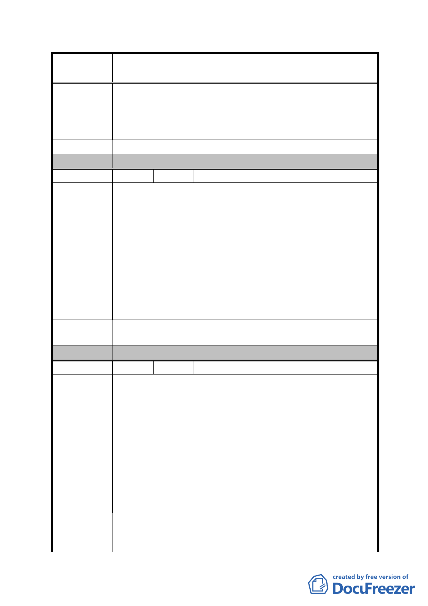

案
名
修訂臺北市「基隆河（中山橋至成美橋段）附近地區土地使
用分區與都市設計管制要點」（北段地區）計畫案
容量。
四、給予獎勵容積、放寬使用分區用途、放寬建築物高度限
制等優惠，一定要有回饋機制。
五、目前違法使用要取締。
建 議 辦 法 （同上）
委 員 會 決 議 同編號 1。
編 號 36 陳情人 陳春銅等 7 人
一、本地區採區段徵收，於97年1月30日市府發佈二次通盤
檢討（下稱二通）公展版。
二、市府已開放內科土地使用，已造成產業經濟分配異動。
市府於99年8月16日召開專案閉門會議，置97年公展版
陳情理由
及民眾意見於不顧。
三、本地區居民對本地區地方發展有知的權利，陳情人急迫
憂心少數閉門造車學者召開閉門會議即草率訂定本區未
來發展，祈求政府給予百姓協助並儘速要請關心本地區
發展官員，就本地區發展召開說明會，尋求政府與地方
共識。
建議辦法
吸取當地民眾意見，做為台北市政府研議修訂本計畫的依
據。
委 員 會 決 議 同編號 1。
編 號 37 陳情人 陳清堯等 33 人
一、本計畫地區自97年1月30日市府發佈二次通盤檢討（下
稱二通）公展已近逾三年。
二、我等居住本地區已逾數十年之久，就本地區及鄰近地區
之發展體驗最深。鄰近內科地區早期違規使用嚴重，政
陳情理由
府非但不取締反而就地合法，使內科現今林立辦公大
樓，辦公需求早已填滿其胃納。
三、而本地區地價高於內科約二倍，且辦公需求已被稀釋或
取代，造成產業經濟已不平等，如果再依所謂專家、學
者紙上談兵就訂定本地區未來發展，我等深以為其其不
可，希望政府傾聽在地民眾意見，再妥為規劃訂定。
建請傾聽、吸取當地民眾意見，並儘速續辦為 97 年 1 月 30
建 議 辦 法 日府都規字第 09635914200 號公告台北市「基隆河（中山橋
至成美橋段）附近地區土地使用分區與都市設計管制要點」
- 97 -